토목기사 (2013-03-10 기출문제)
1과목: 응용역학
1. 그림과 같은 3힌지(hinge) dnjsgh 아치가 P=10t의 하중을 받고 있다. B지점에서 수평 반력(Hв)은?
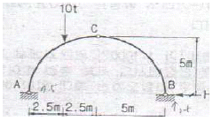
- 1.5t
- 2.0t
- 2.5t
- 3.0t
(정답률: 71%)
2. 그림과 같은 구조물에서 단부 A, B는 고정, C지점은 힌지일 때 0A, 0B, 0C 부재의 분배율로 옳은 것은?
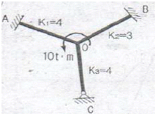
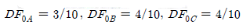
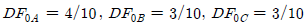
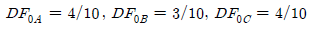
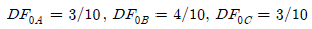
(정답률: 77%)

3. 그림과 같은 2개의 캔틸레버보에서 저장되는 변형에너지를 각각 U(1), U(2)라고 할 때 U(1), U(2)의 비는?
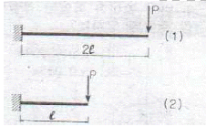
- 2 : 1
- 4 : 1
- 8 : 1
- 16 : 1
(정답률: 78%)
4. 그림과 같은 트러스에서 AC부재의 부재력은?
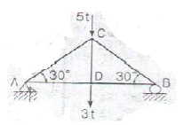
- 인장 4t
- 압축 4t
- 인장 8t
- 압축 8t
(정답률: 77%)
5. 다음 인장부재의 수직변위를 구하는 식으로 옳은 것은? (단, 탄성계수는 E)
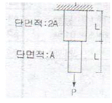
- PL/EA
- 3PL/2EA
- 2PL/EA
- 5PL/2EA
(정답률: 77%)
6. 길이가 ℓ이고 지름이 D인 원형단면 기둥의 세장비는?
- 2l/D
- 4l/D
- l/2D
- l/D
(정답률: 82%)
7. B점의 수직변위가 1이 되기 위한 하중의 크기 P는? (단, 부재의 축강성은 EA로 동일하다.)
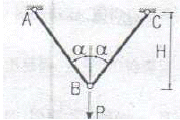
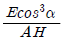
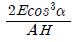
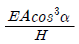
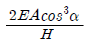
(정답률: 79%)
8. 그림과 같은 내민보에서 자유단 C점의 처짐이 0이 되기 위한 P/Q는 얼마인가? (단, EI는 일정하다)
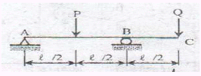
- 3
- 4
- 5
- 6
(정답률: 49%)
9. 그림과 같은 속이 찬 직경 6㎝의 원형축이 비틀림 T=400kg·m를 받을 때 단면에서 발생하는 최대 전단응력은?
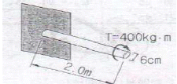
- 926.5kg/cm2
- 932.6kg/cm2
- 943.1kg/cm2
- 950.2kg/cm2
(정답률: 69%)
10. 그림과 같은 단순지지된 보에 등분포하중 q가 작용하고 있다. 지점C의 부모멘트와 보의 중앙에 발생하는 정모멘트의 크기를 같게하여 등분포하중 q의 크기를 제한하려고 한다. 지점 C와 D는 보의 대칭거동을 유지하기 위하여 각각 A와 B로부터 같은 거리에 배치하고자 한다. 이때 보의 A점으로부터 지점 C의 거리 X는?
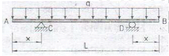
- x=0.207L
- x=0.250L
- x=0.333L
- x=0.444L
(정답률: 63%)
11. 아래 그림과 같은 보에서 A점의 수직반력은?
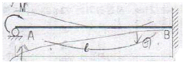
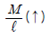
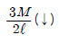
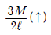
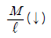
(정답률: 57%)
12. 아래 그림과 같은 하중을 받는 단순보에 발생하는 최대 전단응력은?
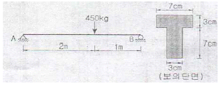
- 44.8kg/cm2
- 34.8kg/cm2
- 24.8kg/cm2
- 14.8kg/cm2
(정답률: 65%)
13. 그림의 보에서 G는 내부 힌지(hinge)이다. 지점 B에서의 휨모멘트로 옳은 것은?
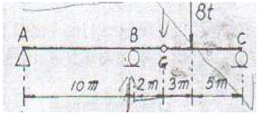
- -10 t.m
- +20 t.m
- -40 t.m
- +50 t.m
(정답률: 59%)
14. 아래 그림에서 단면의 도심
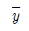
를 구하면?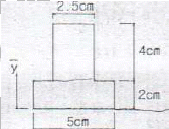
- 2.5cm
- 2.0cm
- 1.5cm
- 1.0cm
(정답률: 68%)
15. 그림과 같은 단순보의 중앙점(C점)에서 휨모멘트 Mc는?
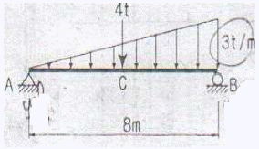
- 10 t.m
- 20 t.m
- 30 t.m
- 40 t.m
(정답률: 61%)
16. 다음 그림과 같은 단면의 A-A축에 대한 단면 2차 모멘트는?
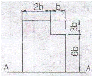
- 558 b4
- 623 b4
- 685 b4
- 729 b4
(정답률: 80%)
17. 지름 4㎝, 길이 100㎝의 둥근 막대가 인장력을 받아서 길이가 0.6㎝ 늘어나고 동시에 지름이 0.008㎝만큼 줄었을 때 이 재료의 포아송수는?
- 1.5
- 2.0
- 2.5
- 3.0
(정답률: 67%)
18. 다음의 단순보의 C점의 곡률반경을 구하면 얼마인가? (단, E=10000㎏/cm2, I=40000㎝4)
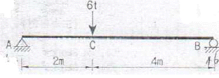
- 350cm
- 400cm
- 450cm
- 500cm
(정답률: 47%)
19. 장주의 탄성좌굴하중(Elastic bukling Load) Pcr는 아래의 표와 같다. 기둥의 각 지지조건에 따른 n의 값으로 틀린 것은? (단, E : 탄성계수, I : 단면2차 모멘트, ℓ : 기둥의 높이)
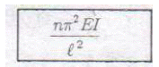
- 일단고정 타단자유 : n=1/4
- 양단힌지 : n=1
- 일단고정 타단힌지 : n=1/2
- 양단고정 : n=4
(정답률: 81%)
20. 다음 그림과 같은 보에서 최대처짐은 A로부터 얼마의 거리(x)에서 일어나는가? (단, EI는 일정하다.)
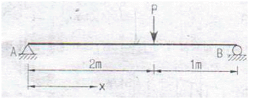
- 1.414m
- 1.633m
- 1.817m
- 1.923m
(정답률: 49%)
2과목: 측량학
21. 100m의 거리를 20m의 줄자로 관측하였다. 1회의 관측에 +50mm의 누적오차와 ±5mm의 우연오차가 있을 때 정확한 거리는?(오류 신고가 접수된 문제입니다. 반드시 정답과 해설을 확인하시기 바랍니다.)
- 100.015±0.011m
- 100.025±0.011m
- 100.015±0.022m
- 100.025±0.022m
(정답률: 69%)
22. 그림과 같은 결합 트래버스에서 측점 2의 조정량은?
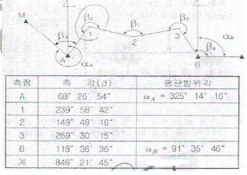
- -2"
- -3"
- -5"
- -15"
(정답률: 50%)
23. 그림과 같은 편심측량에서 ∠ABC는? (단,
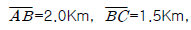
, e=0.5m, t=54° 30' p=300° 30')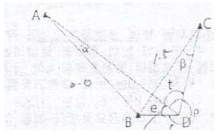
- 54˚ 28' 45"
- 54˚ 30' 19"
- 54˚ 31' 58"
- 54˚ 33' 14"
(정답률: 53%)
24. 표고가 350m인 산 위에서 키가 1.80m인 사람이 볼 수 있는 수평거리의 한계는? (단, 지구곡률 반지름=6370km)
- 47.34km
- 55.22km
- 66.95km
- 3778.22km
(정답률: 50%)
25. 촬영고도 800m의 연직사진에서 높이 20m에 대한 시차차의 크기는? (단, 초점거리는 21cm, 사진크기는 23×23cm, 종중복도는 60%이다.)
- 0.8mm
- 1.3mm
- 1.8mm
- 2.3mm
(정답률: 48%)
26. 고속도로 공사에서 측점 10의 단면적은 318m2, 측점 11의 단면적은 512m2, 측점 12의 단면적은 682m2일 때 측점 10에서 측점 12까지의 토량은? (단, 양단면평균법에 의하여 측점간의 거리는 20m)
- 15120m3
- 20160m3
- 20240m3
- 30240m3
(정답률: 62%)
27. 철도의 궤도간격 b=1.067m, 곡선반지름 R=600m인 원곡선상의 열차가 100Km/h로 주행하려고 할 때 캔트는?
- 100mm
- 140mm
- 180mm
- 220mm
(정답률: 60%)
28. 하천이나 항만 등에서 심천측략을 한 결과의 지형을 표시하는 방법으로 적당한 것은?
- 점고법
- 우모법
- 채색법
- 음영법
(정답률: 71%)
29. B.C의 위치가 NO. 12+16.404m이고 E.C의 위치가 NO. 19+13.520m일 때 시단현과 종단현에 대한 편각은? (단, 곡선반지름=200m, 중심말뚝의 간격=20m, 시단현에 대한 편각=δ1, 종단현에 대한 편각=δ2)
- δ1=1˚ 22' 28", δ2=1˚ 56' 12"
- δ1=1˚ 56' 12", δ2=0˚ 30' 54"
- δ1=0˚ 30' 54", δ2=1˚ 56' 12"
- δ1=1˚ 56' 12", δ2=1˚ 22' 28"
(정답률: 57%)
30. 갑, 을, 병 3사람이 동일조건에서 A, B en 지점의 거리를 관측하여 다음과 같은 결과를 획득하였다. 최확값을 계산하기 위한 경중률은 옳은 것은?
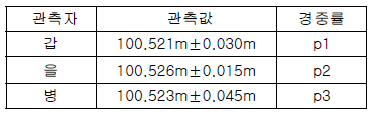
- p1 : p2 : p3 = 2 : 1 : 3
- p1 : p2 : p3 = 3 : 1 : 6
- p1 : p2 : p3 = 9 : 36 : 4
- p1 : p2 : p3 = 4 : 1 : 9
(정답률: 56%)
31. 수준측량에서 전,후시 거리를 같게 함으로써 제거되는 오차가 아닌 것은?
- 빛의 굴절오차
- 지구의 곡률오차
- 시준선이 기포관측과 평행하지 않아 생기는 오차
- 표척눈금의 부정확에서 오는 오차
(정답률: 66%)
32. 완화곡선 중 클로소이드에 대한 설명으로 옳지 않은 것은? (단, R : 곡선반지름, L : 곡선길이)(오류 신고가 접수된 문제입니다. 반드시 정답과 해설을 확인하시기 바랍니다.)
- 클로소이드는 곡률이 곡선길이에 비례하여 증가하는 곡선이다.
- 클로소이드는 나선의 일종이며 모든 클로소이드 닮은 꼴이다.
- 클로소이드의 종점좌표 x,y는 그 점의 접선각의 함수로 표시된다.
- 클로소이드에서 접선각 r을 라디안으로 표시하면 r=R/2L이 된다.
(정답률: 62%)
33. 삼변측량에서 △ABC에서 세변의 길이가 a=1200.00m, b=1600.00m, c=1442.22m라면 변 c의 대각인 ∠C는?
- 45˚
- 60˚
- 75˚
- 90˚
(정답률: 61%)
34. 어떤 횡단면의 도상면적이 40.5cm2이었다. 가로 축척이 1:20, 세로 축척이 1:60이었다면 실제면적은?
- 48.6m2
- 33.75m2
- 4.86m2
- 3.37cm2
(정답률: 60%)
35. 지형측량에서 등고선의 성질에 대한 설명으로 옳지 않은 것은?
- 등고선은 절대 교차하지 않는다.
- 등고선은 지표의 최대 경사선 방향과 직교한다.
- 동일 등고선 상에 있는 모든 점은 같은 높이이다.
- 등고선간의 최단거리의 방향은 그 지표면의 최대경사의 방향을 가리킨다.
(정답률: 79%)
36. 허용 정밀도(폐합비)가 1:1000인 평탄지에서 전진법으로 평판측량을 할 때 현장에서의 전체 측선 길이의 합이 400m이었다. 이 경우 폐합오차는 최대 얼마 이내로 하여야 하는가?
- 10cm
- 20cm
- 30cm
- 40cm
(정답률: 58%)
37. 사진의 특수3점에 대한 그림에서 N, J, M의 명칭으로 옳은 것은?
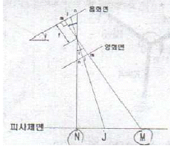
- N : 연직점, J : 등각점, M : 주점
- N : 주점, J : 등각점, M : 연직점
- N : 주점, J : 연직점, M : 등각점
- N : 등각점, J : 연직점, M : 주점
(정답률: 56%)
38. 10000m2의 정사각형 토지의 면적을 측정한 결과, ±0.4m2 오차가 측정되었다면, 거리 측정의 오차는?(오류 신고가 접수된 문제입니다. 반드시 정답과 해설을 확인하시기 바랍니다.)
- +,- 0.000008m
- +,- 0.00008m
- +,- 0.0028m
- +,- 0.063m
(정답률: 43%)
39. 하천측량에 대한 설명으로 옳지 않은 것은?
- 평균유속 계산식은 Vm=V0.6, Vm=1/2(V0.2+V0.8), Vm=1/4(V0.2+2V0.6+V0.8)등이 있다.
- 하천길울기(I)를 이용한 유량을 구하기 위한 유속은
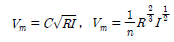
공식을 이용하여 구한다. - 유량관측에 이용되는 부자는 표면부자, 2중부자, 봉부자 등이 있다.
- 하천측략이 일반적인 작업 순서는 도상조사, 현지조사, 자료조사, 유량측량, 지형측량, 기타의 측량 순으로 한다.
(정답률: 66%)
40. 수준점 A, B, C에서 수준측량을 하여 P점의 표고를 얻었다. P점 표고의 최확값은?
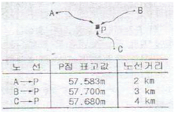
- 57.641m
- 57.649m
- 57.654m
- 57.706m
(정답률: 68%)
3과목: 수리학 및 수문학
41. 관수로를 흐르는 난류 흐름에서 관마찰손실계수 f에 대한 설명으로 옳은 것은? (단, R : 곡선반지름, L : 곡선길이)
- Reynolds 수만의 함수이다.
- Reynolds 수와 상대조도의 함수이다.
- 상대조도와 Froude 수의 함수이다.
- 유속과 관지름의 함수이다.
(정답률: 61%)
42. 빙산(氷山)의 부피가 V, 비중이 0.92이고, 바닷물의 비중이 1.025라 할 때 빙산의 바닷물 속에 잠겨있는 부분의 부피는?
- 0.92v
- 0.9v
- 0.82v
- 0.8v
(정답률: 70%)
43. 도수가 일어나기 전후에서의 수심이 각각 1.5m, 9.24m이었다. 이 도수로 인한 수두손실은?
- 0.80m
- 0.83m
- 8.36m
- 16.7m
(정답률: 58%)
44. 모래여과지에서 사층 두께 2.4m, 투수계수를 0.04cm/sec로 하고 여과수도를 50cm로 할 때 10000m2/day의 물을 여과시키는 경우 여과지 면적은?
- 1289m2
- 1389m2
- 1489m2
- 1589m2
(정답률: 54%)
45. 10mm 단위도의 증거가 0.20, 8, 3, 0[m2/sec]이고 유효강우량이 20mm, 10mm일 경우에 첨두유량[m2/sec]은? (단, 단위시간은 2시간이다.)
- 20
- 34
- 40
- 42
(정답률: 40%)
46. 수심이 10cm, 수로폭은 20cm인 직사각형의 실험 개수로에서 유량이 80cm2/sec로 흐를 때 이 흐름의 종류는?(동점성계수=1.5×10-2 cm2/sec
- 층류, 상류
- 층류, 사류
- 난류, 상류
- 난류, 사류
(정답률: 48%)
47. 두께 3m인 피압대수층에서 반지름 1m인 우물로 양수한 결과, 수면강하 10m일 때 정상상태로 되었다. 투수계수 0.3m/hr, 영향권 반지름 400m라면 이때의 양수량은?
- 2.6×10-3m3/s
- 6.0×10-3m3/s
- 9.4m3/s
- 21.6m3/s
(정답률: 45%)
48. 1m×1m 크기의 평판을 연직방향으로 세워서 물속에 잠기게 하였다. 이 평판을 점점 더 깊은 곳으로 이동할 경우에 전수압의 작용점까지의 수심(hc)과 평면의 도심까지의 수심(hc)의 차(hc-hG)는?
- 0보다 작아진다.
- 0에 가까워진다
- 점점 커진다.
- 변함이 없다.
(정답률: 61%)
49. 합성단위 유량도(synthetic unit hydrograph) 작성법이 아닌 것은?
- snyder 방법
- scs의 무차원 단위유량도 이용법
- nakayasu 방법
- 순간 단위유량도법
(정답률: 58%)
50. 흐르는 물속에 연직으로 세운 두 고정 평행판 사이의 흐름에 대한 설명으로 옳은 것은?
- 전단응력과 유속분포는 전단면에서 일정하다.
- 전단응력과 유속분포는 판의 벽에서 0이고 판과 판의 중점을 향해서 직선 형태를 분포한다.
- 전단응력과 유속분포는 전단면에서 포물선 형태로 분포한다.
- 전단응력은 두 판의 중점에서 0이고 중점으로부터 거리에 따라 직선 형태로 분포하며, 유속은 중점에서 최대인 포물선 형태로 분포한다.
(정답률: 55%)
51. 지름 1m의 원통 수조에서 지름 2cm의 관으로 물이 유출되고 있다. 관내의 유속이 2.0m/s일 때 수조의 수면이 저하되는 속도는?
- 0.4cm/s
- 0.3cm/s
- 0.08cm/s
- 0.06cm/s
(정답률: 52%)
52. 중력장에서 단위유체질량에 작용하는 외력 F의 x, y, z 축에 대한 성분을 각각 x, y, z라고 하고, 각 축방향의 증분을 dx, dy, dz라고 할 때 등압면의 방정식은?
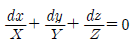
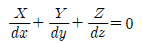
- X ㆍ dx+Y ㆍ dy+Z ㆍ dz=0
- X ㆍ dx+Y ㆍ dy+Z ㆍ dz=dF
(정답률: 57%)
53. 유역의 평균 강우량을 계산하기 위하여 사용되는 thiessen 방법의 단점으로 옳은 것은?
- 지형의 영향(산악효과)을 고려할 수 없다.
- 지형의 영향은 고려되나 강우 형태는 고려되지 않는다.
- 우량계의 종류에 따라 크게 영향을 받는다.
- 계산은 간편하나 신술평균법보다 부정확하다.
(정답률: 56%)
54. 물리량의 차원을 표시한 것으로 옳지 않은 것은?
- 각 가속도 : [T-2]
- 힘 : [MLT-2]
- 점성계수 : [ML-1T-1]
- 탄성계수 : [MLT-2]
(정답률: 40%)
55. 3m 폭을 가진 직사각형 수로에 사각형인 광정(廣頂)위어를 설치하려 한다. 위어 설치 전의 평균 유속은 1.5m/sec, 수심이 0.3m이고, 위어설치 후의 평균 유속이 0.3m/sec, 위어상류의 수심이 1.5m가 되었다면 위어의 높이 h는? (단, 에너지 보정계수 α=1.0)
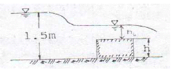
- 0.7m
- 0.9m
- 1.1m
- 1.3m
(정답률: 44%)
56. 다음의 설명 중 옳지 않은 것은? (단, ℓ=관의 총길이, D=관의 지름)
- 관수로 출구 손실계수는 보통 1로 본다.
- 관수로 내의 손실수두는 유속수도에 비례한다.
- 관수로에서 마찰 이외의 손실수도를 무시할 수 있는 경우는 ℓ/D>3000이다.
- 마찰손실 수두는 모든 손실수두 가운데 가장 큰 것으로 마찰손실 계수에 유속수두를 곱한 것과 같다.
(정답률: 54%)
57. 다음 용어에 대한 설명으로 옳지 않은 것은?
- 일평균기온 : 일 최대 및 최저 기온을 산술 평균한 기온
- 월평균기온 : 해당 월의 일평균기온 중 최고 및 최저 기온을 산술 평균한 기온
- 연평균기온 : 해당 연의 월평균기온 중 최고 및 최저 기온을 산술 평균한 기온
- 정상 월평균기온 : 특정 월에 대한 장기간 동안의 월평균기온을 산술 평균한 온도
(정답률: 57%)
58. 3종의 강우강도 I1, I2 및 I3의 대소(大小) 관계로 옳은 것은?
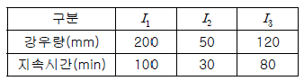
- I1>I2>I3
- I1>I3>I2
- I1=I2>I3
- I1＜ I2=I3
(정답률: 67%)
59. 폭이 2m, 높이가 9.8m인 평판이 정지수중에서 5m/sec의 속도로 움직일 때 항력계수가 Cd=0.2라면 평판에 작용하는 항력(抗力)은? (단, 무게 1kg=10N)
- 10kN(1t)
- 25kN(2.5t)
- 30kN(3t)
- 50kN(5t)
(정답률: 53%)
60. 어느 유선상에 두점 1, 2가 있다. 점 2로부터 점 1로 물이 흐를 때 수두손실(hL)와 펌프에 의한 에너지공급(hD)이 있었다. 이 흐름을 해석하기 위한 베르누이 방정식으로 옳은 것은? (단, r는 물의 단위 중량을 나타낸다.)
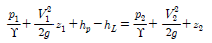
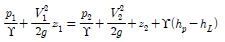
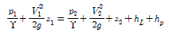
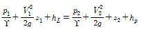
(정답률: 40%)
4과목: 철근콘크리트 및 강구조
61. 다음 그림과 같이 w=40kN/m일 때 ps단면 중심에서 긴장되며 인장측의 콘크리트 응력이 "0"이 되려면 ps 강재에 얼마의 긴장력이 작용하여야 하는가?
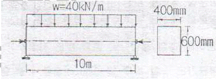
- 46⑤kN
- 5000kN
- 5200kN
- 5625kN
(정답률: 66%)
62. 단면이 300mm×300mm인 철근콘크리트보의 인장부에 균열이 발생할때의 코멘트(Mcr)가 13.9kN·m이다. 이 콘크리트의 설계 기준강도 fck는 약 얼마인가?
- 18MPa
- 21MPa
- 24MPa
- 27MPa
(정답률: 61%)
63. 그림의 단면을 갖는 저보강 PSC보의 설계휨강도(ΦMn)는 얼마인가? (단, 긴장재 단면적 Ap=600mm2, 긴장애 인장응력 fps=1500MPa, 콘크리트 설계기준강도 fck=35MPa)
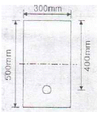
- 187.5kNㆍm
- 225.3kNㆍm
- 267.4kNㆍm
- 293.1kNㆍm
(정답률: 46%)
64. 직사각형 단면(300×400)mm2인 프리텐션 부재에 550mm2의 단면적을 가진 PS 강선을 콘크리트 단면도심에 일치하도록 배치하였다. 이때 1350MPa의 인장응력이 되도록 긴장한 후 콘크리트에 프리스 트레스를 도입한 경우 도입직후 생기는 PS강선의 응력은?(단, n=6, 단면적은 총단면적 사용)
- 371MPa
- 398MPa
- 1313MPa
- 1321MPa
(정답률: 55%)
65. 강판형(Plate girder) 복부(web) 두께의 제한이 규정되어 있는 가장 큰 이유는?
- 시공상의 난이
- 공비의 절약
- 자종의 경감
- 좌굴의 방지
(정답률: 72%)
66. 콘크리트의 압축강도(fck)가 35MPa, 철근의 항복강도(fy)가 400MPa, 폭이 350mm, 유효깊이가 600mm 단철근 직사각형 보의 최소철근량은 얼마인가?
- 690mm2
- 735mm2
- 752mm2
- 777mm2
(정답률: 56%)
67. 450kN의 계수하중(Pu)을 원형기둥(직경 300mm)으로 지지하는 그림과 같은 정사각형 확대기초판이 있다. 위험단면에서의 휨 모멘트는?
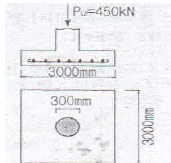
- 135.7kNㆍm
- 140.2kNㆍm
- 145.4kNㆍm
- 150.3kNㆍm
(정답률: 32%)
68. 그림과 같은 복철근 직사각형 단면에서 응력 사각형의 깊이 a의 값은 얼마인가? (단, fck=24MPa, fy=350MPa, As=5730mm2, As´=1980mm2)
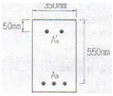
- 227.2mm
- 199.6mm
- 217.4mm
- 183.8mm
(정답률: 61%)
69. 인장 이형철근의 정착길이 산정시 필요한 보정계수(α β)에 대한 설명으로 틀린 것은?
- 피복두께가 3db 미만 또는 순간격이 6db 미만인 도막철근일 때 철근 도막계수(β)는 1.5를 적용한다.
- 상부철근(정착길이 또는 겹침이음부 아래 300mm를 되게 굳지 않은 콘크리트를 친 수평철근)인 경우 철근 배치 위치계수(β)는 1.3을 사용한다.
- 아연도금 철근은 철근 도막계수(β)를 1.0으로 적용한다.
- 에폭시 도막철근이 상부철근인 경우 상부철근의 위치계수(β)와 철근 도막계수(β)의 곱, αβ가 1.6보다 많아야 한다.
(정답률: 62%)
70. 포스트텐션 방법에는 발생하나 프리텐션 방법에서는 발생하지 않는 손실은?
- 긴장재의 마찰
- 정착장치의 활동
- 콘크리트의 탄성 수축
- 긴장재 응력의 릴랙세이션
(정답률: 47%)
71. 아래 그림과 같은 단철근 T형보에서 등가압축응력의 깊이(a)는?(단, Fck=21MPa, Fy=300MPa)
- 75mm
- 80mm
- 90mm
- 103mm
(정답률: 60%)
72. 그림과 같은 용정부의 응력은?
- 115MPa
- 110MPa
- 100MPa
- 94MPa
(정답률: 68%)
73. 주어진 철근 콘크리트보의 단면에서 비틀림 철근없이 저항할 수 있는 설계 비틀림 강도(ΦTn)의 최속값을 구하면?(단, fck=28Mpa, fy=400)
- 7.35kNㆍm
- 7.42kNㆍm
- 7.65kNㆍm
- 7.73kNㆍm
(정답률: 34%)
74. 폭(b)=600mm, 전체 높이(h)=1000mm인 직사각형 단면을 가지는 철근콘크리트 부재에 자중만 작용한다면 계수휨모멘트(Mu)는?(단,지간 6.8m인 단순보이고 , 철근콘크리트의 단위무게는 25KN/m3을 적용한다)
- 104.1kNㆍm
- 121.4kNㆍm
- 142.8kNㆍm
- 158.5kNㆍm
(정답률: 40%)
75. 복철근보에서 압축철근 배치로 얻어지는 효과로 적당하지 않은 것은?
- 연성을 증가시킨다.
- 강성을 증가시킨다.
- 지속 하중에 의한 처짐을 감소시킨다.
- 철근의 조립을 쉽게 한다.
(정답률: 45%)
76. 휨을 받는 인장철근으로 4-D25 철근이 배치되어 있을 경우 그림과 같은 직사각형 단면 보의 기본 정착길이 ldb는 얼마인가? (단, 철근의 직경 db=25.4㎜, fck=24MPa, fy=400MPa, D25철근 1개이 단면적=507mm2)
- 9⑤mm
- 1150mm
- 1245mm
- 1400mm
(정답률: 54%)
77. 전단설계의 원칙에 대한 설명으로 틀린 것은?
- 공칭전단강도에 강도감소계수를 곱한 값이 계수전단력보다 작게 설계하여야 한다.
- 공칭전단강도는 콘크리트에 의한 공칭전단강도에 전단 철근에 의한 공칭전단강도를 더한 값이다.
- 콘크리트에 의한 공칭전단강도를 결정할 때, 구속된 부재에서 크리프와 건조수축으로 인한 축방향 인장력의 영향을 고려하여야 한다.
- 콘크리트에 의한 전단강도를 결정할 때, 깊이가 일정하지 않은 부재의 경사진 휨압축력의 영향도 고려하여야 한다.
(정답률: 42%)
78. 연속 휨부재에 대한 해석 중에서 현행 콘크리트구조기준에 따라 부모멘트를 증가 또는 감소시키면서 재분배할 수 있는 경우는?
- 근사해법에 의해 휨모멘트를 계산한 경우
- 하중을 적용하여 탄성이론에 의하여 산정한 경우
- 2방향 슬래브 시스템의 직접설계법을 적용하여 계산한 경우
- 2방향 슬래브 시스템을 등가골조법으로 해석한 경우
(정답률: 47%)
79. 폭(b)=300mm, 유효깊이(d)=400mm인 직사각형 단면에 인장철근 4-D32(1본의 단면적 794mm2)가 1열로 배치되어 있는 보에서 fck=38MPa, fy=400MPa일 때 이 단면의 설계휨강도를 계산하기 위한 강도감소계수(Φ)를 구하면?
- 0.79
- 0.81
- 0.83
- 0.85
(정답률: 41%)
80. 길이가 4m 캔틸레버보에서 처짐을 계산하지 않는 경우 보의 최소두께로 옳은 것은?( 단, (단, fck=28MPa, fy=350MPa
- 465mm
- 484mm
- 500mm
- 516mm
(정답률: 60%)
5과목: 토질 및 기초
81. 압밀시험결과 시간-침하량 곡선에서 구할 수 없는 값은?
- 1차 압밀비(rp)
- 초기 압축비
- 선행압밀 압력(Pc)
- 압밀계수(Cv)
(정답률: 49%)
82. 체적이 V=5.83cm2인 점토를 건조로에서 건조시킨 결과 무게는 Ws=11.26g이었다. 이 점토의 비중이 Gs=2.67이라고 하면 이 점토의 수축한계값은 약 얼마인가?
- 28%
- 24%
- 14%
- 8%
(정답률: 38%)
83. 흙의 포화단위중량이 2.0t/m2인 포화점토층을 45˚ 경사로 8m를 출착하였다. 흙의 강도 계수 Cu=6.5t/m2, Φu=0˚이다. 그림과 같은 파괴면에 대하여 사면의 안전율은? (단, ABCD의 면적은 70m2이고 0점에서 ABCD의 무게중심까지의 수직거리는 4.5m이다.)
- 4.72
- 2.67
- 4.21
- 2.36
(정답률: 39%)
84. 아래 표의 설명과 같은 경우 강도정수 결정에 적합한 삼축 압축 시험의 종류는?
- 압밀배수 시험(CD)
- 압밀비배수 시험(CU)
- 비압밀비배수 시험(UU)
- 비압밀배수 시험(UD)
(정답률: 65%)
85. 말뚝의 부마찰력에 대한 설명 중 틀린 것은?
- 부마찰력이 작용하면 지지력이 감소한다.
- 연약지반에 말뚝을 박은 후 그 위에 성토를 한 경우 일어나기 쉽다.
- 부마찰력은 말뚝 주변침하량이 말뚝의 침하량보다 클 때 아래로 끌어내리는 마찰력을 말한다.
- 연약한 점토에 있어서는 상대변위의 속도가 느릴수록 부마찰력은 크다.
(정답률: 64%)
86. 함수비 18%의 흙 500kg을 함수비 24%로 만들려고 한다. 추가해야 하는 물의 양은?
- 80.41kg
- 54.52kg
- 38.92kg
- 25.43kg
(정답률: 56%)
87. 어떤 시료를 입도분석한 결과, 0.075mm(No200)체 통과량이 65%이었고, 애터버그한계 시험결과 액성한계가 40%이었으며 소성도표(Plasticty chart)에서 A선위의 구역에 위치한다면 이 시료의 통일분류법(USCS)상 기호로서 옳은 것은?
- CL
- SC
- MH
- SM
(정답률: 60%)
88. 다음 현장시험 중 Sounding의 종류가 아닌 것은?
- 평판재하 시험
- Vane 시험
- 표준관입 시험
- 동적 원추관입 시험
(정답률: 62%)
89. 4m×4m 크기인 정사각형 기초를 내부마찰각 Φ=20˚ 점착력 c=3t/m2인 지반에 설치하였다. 흙의 단위중량®=1.9t/m2이고 안전율을 3으로 할 때 기초의 허용하중을 Terzaghi 지지력공식으로 구하면? (단, 기초의 깊이는 1m이고, 전반전단파괴가 발생한다고 가정하며, Nc=17.69, Nq=7.44, Nr=4.97이다.)
- 478t
- 524t
- 567t
- 621t
(정답률: 57%)
90. 다짐에 대한 다음 설명 중 옳지 않은 것은?
- 세립토의 비율이 클수록 최적함수비는 증가한다.
- 세립토의 비율이 클수록 최대건조 단위중량은 증가한다.
- 다짐에너지가 클수록 최적함수비는 감소한다.
- 최대건조 단위중량은 사질토에서 크고 점성토에서 작다.
(정답률: 55%)
91. 포화점토에 대해 비압밀 비배수(UU) 삼축압축 시험을 한 결과 액압 1.0㎏/cm2에서 피스톤에 의한 축차 압력 1.5㎏/cm2일 때 파괴되었고 이때의 간극수압이 0.5㎏/cm2만큼 발생되었다. 액압을 2.0㎏/cm2로 올린다면 피스톤에 의한 축차압력은 얼마에서 파괴가 되리라 예상되는가?
- 1.5kg/cm2
- 2.0kg/cm2
- 2.5kg/cm2
- 3.0kg/cm2
(정답률: 29%)
92. 기초폭 4m인 연속기초에서 기초면에 작용하는 합력의 연직성분은 10t이고 편심거리는 0.4m일 때, 기초지반에 작용하는 최대 압력은?
- 2t/m2
- 4t/m2
- 6t/m2
- 8t/m2
(정답률: 46%)
93. 비배수 점착력, 유효상재압력, 그리고 소성지수 사이의 관계는 cu/p=0.11+0.0037(PI) 이다. 아래 그림에서 정규압밀점토의 두께는 15m, 소성지수(PI)가 40%일 때 점토층의 중간깊이에서 비배수 점착력은?
- 3.48t/m2
- 3.13t/m2
- 2.65t/m2
- 2.27t/m2
(정답률: 37%)
94. 침투유량(q) 및 B점에서의 간극수압(uв)을 구한 값으로 옳은 것은? (단, 투수층의 투수계수는 0.3cm/sec이다.)
- q=100cm3/sec/㎝, uв=0.5kg/cm2
- q=100cm3/sec/㎝, uв=1.0kg/cm2
- q=200cm3/sec/㎝, uв=0.5kg/cm2
- q=200cm3/sec/㎝, uв=1.0kg/cm2
(정답률: 42%)
95. 5m×10m의 장방형 기초위에 q=6t/m2의 등분포 하중이 착용할 때, 지표면 아래 10m에서의 수직 응력은 2:1법으로 구한 값은?
- 1.0t/m2
- 2.0t/m2
- 3.0t/m2
- 4.0t/m2
(정답률: 49%)
96. 기초의 크기가 25m×25m인 강성기초로 된 구조물이 있다. 이 구조물의 허용각변위(angular distortion)가 1/500이라고 할 때, 최대 허용 부등침하량은?
- 2cm
- 2.5cm
- 4cm
- 5cm
(정답률: 37%)
97. 샘플러(sampler)의 외경이 6㎝, 내경이 5.5㎝일 때, 면적비(Ar)는?
- 8.3%
- 9.0%
- 16%
- 19%
(정답률: 62%)
98. 단면적 100cm2, 길이 30cm인 모래 시료에 대한 정수도 투수시험결과 아래의 표와 같을 때 이 흙의 투수계수는?
- 0.001cm/sec
- 0.0⑤cm/sec
- 0.01cm/sec
- 0.⑤cm/sec
(정답률: 43%)
99. rt=1.9t/m2, Φ=30˚인 뒤채움 모래를 이용하여 높이 8m의 보강토 옹벽을 설치하고자 한다. 폭 75mm, 두께 3.69mm의 보강띠를 연직방향 설치간격 Sv=0.5m, 수평방향 설치간격 Sh=1.0m로 시공하고자 할 때, 보강띠에 작용하는 최대함 Tmax 크기를 계산하면?
- 1.53t
- 2.53t
- 3.53t
- 4.53t
(정답률: 40%)
100. 포화된 지반의 간극비를 e, 함수비를 w, 간극률을 n, 비중을 Gs라 할때 다음 중 한계 동수경사를 나타내는 식으로 적절한 것은?
- (1+n)(Gs-1)
(정답률: 57%)
6과목: 상하수도공학
101. 다층여과지에 대한 설명으로 옳지 않은 것은?
- 모래단층여과지에 비하여 여과속도를 크게 할 수 있다.
- 탁질억류량에 대한 손실수두가 적어서 여과지속시간이 길어진다.
- 표면여과의 경향이 강하므로 여과층의 단위체적당 탁질억류량이 작다.
- 수류방향에서 여재의 입경이 큰 것으로부터 작은 것으로 역입도의 여과층을 구성한다.
(정답률: 36%)
102. 알칼리도가 300mg/L의 물에 황산알루미늄을 첨가했더니 25mg/L의 알칼리도가 소비되었다. 여기에 Ca(OH)2를 주입하여 알칼리도를 15mg/L로 유지하기 위해 필요한 Ca(OH)2는? (단, Ca(OH)2 분자량 74, aCO3 분자량 100이다.)(오류 신고가 접수된 문제입니다. 반드시 정답과 해설을 확인하시기 바랍니다.)
- 7.4mg/L
- 8.2mg/L
- 10.5mg/L
- 11.2mg/L
(정답률: 34%)
103. 정수시설 내에서 조류를 제거하는 방법으로 약품으로 조류를 산화시켜 침전처리 등으로 제거한 방법에 사용되는 것은?(오류 신고가 접수된 문제입니다. 반드시 정답과 해설을 확인하시기 바랍니다.)
- 과망간산칼륨
- 차이염소산나트륨
- 황산구리
- Zeolite
(정답률: 47%)
104. 도수관에서 유량을 Hazen-Williams 공식으로 다음과 같이 나타내었을 때 a, b의 값은?
- a=0.63, b=0.54
- a=0.63, b=2.54
- a=2.63, b=2.54
- a=2.63, b=0.54
(정답률: 42%)
1⑤. 활성슬러지 공정의 설계에 있어 F/M비는 매우 유용하게 사용된다. 만일 유입수가 BOD가 2배 증가하고 반응조의 체류시간을 1.5배로 증가시키면 F/M비는?
- 50% 증가
- 33% 증가
- 25% 감소
- 33% 감소
(정답률: 56%)
106. Jar-Test는 적정 응집제의 주입량과 적정 pH를 결정하기 위한 시험이다. Jar-Test시 응집제를 주입한 후 급속교반 후 완속교반을 하는 이유는?
- 응집제를 용해시키기 위해서
- 응집제를 고르게 섞기 위해서
- 플록이 고르게 퍼지게 하기 위해서
- 플록을 깨드리지 않고 성장시키기 위해서
(정답률: 65%)
107. 침전지의 침전효율을 증가시키기 위한 설명으로 옳지 않은 것은?
- 표면부하율을 작게 하여야 한다.
- 침전지 표면적을 크게 하여야 한다.
- 유량을 작게 하여야 한다.
- 지내 수평속도를 크게 하여야 한다.
(정답률: 49%)
108. 계획오수량 산정시 고려하는 사항에 대한 설명으로 옳지 않은 것은?
- 지하수량은 1인 1일 최대오수량의 10~20%로 한다.
- 계획 1일 평균오수량은 계획1일 최대오수량의 70~80%를 표준으로 한다.
- 계획시간최대오수량은 계획1일 평균오수량의 1시간당 수량의 0.9~1.2배를 표준으로 한다.
- 계획1일최대오수량은 1인1일최대오수량에 계획인구를 곱한 후 공장폐수량, 지하수량 및 기타 배수량을 더한 값으로 한다.
(정답률: 65%)
109. 다음 설명 중 옳지 않은 것은?
- BOD가 과도하게 높으면 DO는 감소하며 악취가 발생된다.
- BOD, COD는 오염의 지표로서 하수 중의 용존 산소량을 나타낸다.
- BOD는 유기물이 호기성 상태에서 분해, 안정화 되는데 요구되는 산소량이다.
- BOD는 보통 20℃에서 5일간 시료를 배양했을 때 소비된 용존산소량으로 표시된다.
(정답률: 60%)
110. 다음 중 우수조정지의 구조형식이 아닌 것은? (단, 댐식은 제방 높이 15m 미만으로 한다.)
- 댐식
- 굴착식
- 계단식
- 지하식
(정답률: 54%)
111. 하수관거의 단면에 대한 설명으로 ①과 ②에 알맞은 것은?
- ①원형 또는 직사각형 ② 원형 또는 계란형
- ①원형 ② 직사각형
- ①계란형 ② 원형
- ①원형 또는 직사각형 ② 원형 또는 직사각형
(정답률: 48%)
112. 하수배제 방식의 합류식과 분류식에 관한 설명으로 옳지 않은 것은?
- 분류식이 합류식에 비하여 일반적으로 관거의 부설비가 적게 든다.
- 분류식은 강우초기에 비교적 오염된 노면배수가 직접 공공수역에 방류될 우려가 있다.
- 하수관거내의 유속의 변화폭은 합류식이 분류식보다 크다.
- 합류식, 하수관거는 단면이 커서 관거내 유지관리가 분류식보다 쉽다.
(정답률: 63%)
113. 수격작용을 방지하기 위한 방법으로 옳지 않은 것은?
- 펌프에 플라이 휠(fly-wheel)을 붙여 펌프의 관성을 증가시킨다.
- 토출측 관로에 조압수조(surge tank)를 설치한다.
- 압력수조(air-chamber)를 설치한다.
- 펌프 흡입측에 완폐형 역지밸브를 단다.
(정답률: 57%)
114. 하천의 자정계수(self-purification factor)에 대한 설명으로 옳은 것은?
- 유속이 클수록 그 값이 커진다.
- DO에 대한 BOD의 비로 표시된다.
- [탈산소계수/재폭기계수]로 나타낸다.
- 저수지보다 하천에서 그 값이 작게 나타난다.
(정답률: 46%)
115. 트리할로메탄(Trihalomethane : THM)에 대한 설명으로 옳지 않은 것은?
- 발암성 물질이므로 규제하고 있다.
- 전염소처리로 제거할 수 있다.
- 현탁성 THM 전구물질의 제거는 응집침전에 의한다.
- 생성된 THM은 활성탄 흡착으로 어느정도 제거가 가능하다.
(정답률: 63%)
116. 하수도계획의 기본적 사항에 관한 설명으로 옳지 않은 것은?
- 하수도 계획의 목표연도는 시설의 내용년수, 건설 기간등을 고려하여 50년을 원칙으로 한다.
- 계획구역은 계획목표년도에 시가화 예상구역까지 포함하여 광역적으로 정하는 것이 좋다.
- 신시가지 하수도계획의 수렵시에는 기존시가지 및 신시가지를 합하여 종합적으로 고려해야 한다.
- 공공수역의 수질보전 및 자연환경보전을 위하여 하수도 정비를 필요로 하는 지역을 계획구역으로 한다.
(정답률: 65%)
117. 오수관거내 유속이 느리면 오물이 침전할 우려가 있다. 이를 방지하기위한 오수관거내 최소 유속은?
- 0.3m/sec
- 0.4m/sec
- 0.5m/sec
- 0.6m/sec
(정답률: 45%)
118. 펌프의 비속도 Ns에 대한 설명으로 옳지 않은 것은?
- Ns가 작아짐에 따라 소형이 되어 펌프의 값이 저렴해진다.
- 유량과 양정이 동일하다면 회전속도가 클수록 Ns가 커진다.
- Ns가 클수록 유량은 많고 양정은 작은 펌프를 의미한다.
- Ns가 같으면 펌프의 크고 작은 것에 관계없이 모두 같은 형식으로 되며 특성도 대체로 같다.
(정답률: 44%)
119. 인구 10만의 도시에 급수계획을 하려고 한다. 계 1인1일 최대급수량이 400L/인·일이라면 급수보금율을 90%라 할 때, 계획1일 최대급수량은?
- 27000m3/day
- 36000m3/day
- 40000m3/day
- 44000m3/day
(정답률: 64%)
120. 혐기성 소화공정에서 소화가스 발생량이 저하될 때 그 원인으로 적합하지 않은 것은?
- 소화슬러지의 과잉배출
- 조내 퇴적 퇴사의 배출
- 소화조내 온도의 저하
- 소화가스의 누출
(정답률: 54%)